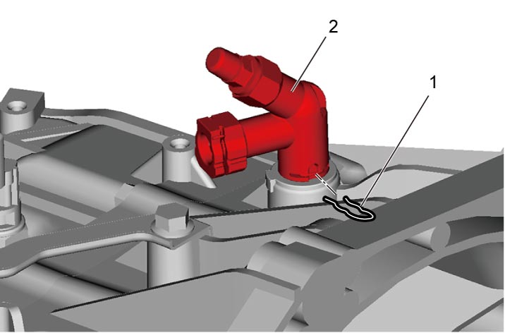
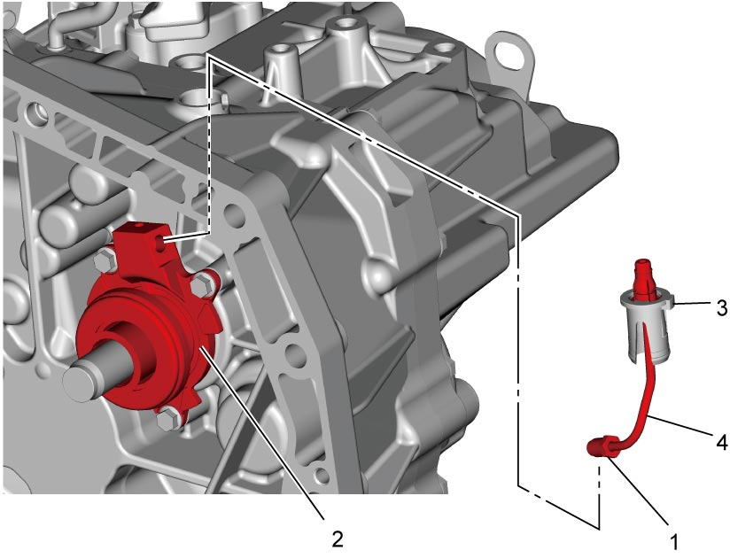
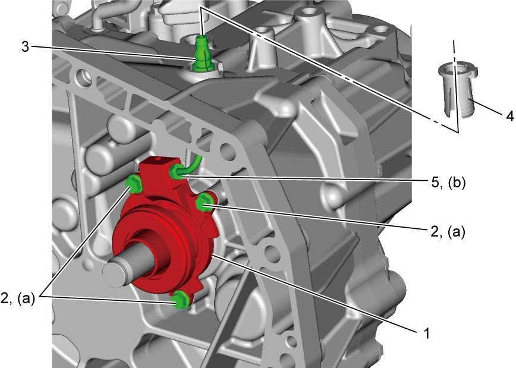

5C
| Clutch Operating Cylinder Assembly Removal and Installation |
NOTICE:
•Brake fluid is extremely damaging to painted surfaces.
If brake fluid contacts a painted surface, immediately wipe it off and flush the surface thoroughly with water.
•The clutch operating cylinder may lose its original performance if it is disassembled and reassembled.
Do not disassemble and repair the clutch operating cylinder.
If brake fluid contacts a painted surface, immediately wipe it off and flush the surface thoroughly with water.
•The clutch operating cylinder may lose its original performance if it is disassembled and reassembled.
Do not disassemble and repair the clutch operating cylinder.
Removal
1)Dismount transaxle assembly. 
2)Remove clamp (1), to disconnect clutch pipe joint (2).


 "Expand image")
3)Loosen clutch fluid pipe flare nut (1) of clutch operating cylinder assembly (2).
4)Remove clutch pipe joint sleeve (3) from transaxle, and then remove clutch fluid pipe (4).
5)Remove clutch operating cylinder assembly from transaxle.

 "Expand image")
Installation
1)Install clutch operating cylinder assembly (1) to transaxle. Tighten new clutch operating cylinder assembly bolts (2) to specified torque.
2)Connect clutch fluid pipe (3) to clutch operating cylinder assembly temporarily.
3)Install clutch pipe joint sleeve (4) to transaxle securely and then tighten clutch fluid pipe flare nut (5) to specified torque.

 "Expand image")
4)Connect clutch pipe joint (2), and install clamp (1).
5)Remount manual transaxle assembly.
6)Bleed clutch system and check clutch pedal free travel.
•Air bleeding of clutch system:
•Clutch pedal free travel:
•Clutch pedal free travel: